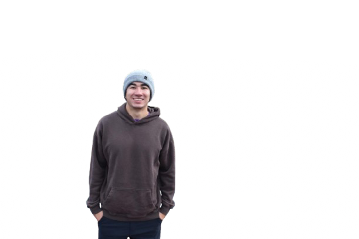

Show up curious
Bring a question, an idea, or nothing but an interest in how systems work.
About the network
The Cloud Network is a Purdue community for students who want hands-on experience with servers, networks, websites, self-hosting, and the infrastructure behind the internet.
01 / Homelabs
A homelab is a place to learn infrastructure by running it yourself. It can be an old laptop, a tiny computer, or a virtual machine—no expensive rack required.
You can use it to host a website, experiment with Linux, run Docker containers, learn networking, or make a service available on the internet.
02 / How it works
Bring a question, an idea, or nothing but an interest in how systems work.
Work alongside other students on Linux, networking, web, and self-hosted projects.
Debug openly, document what worked, and help the next builder get started.
03 / Everyone starts somewhere
You do not need to be a CS major. You do not need server hardware. You do not need prior Linux, networking, Git, or Docker experience.
Curiosity is enough to begin. Meetings and projects are a place to ask questions, try tools, break things safely, and learn from other students.
RSVP for the callout04 / Current leadership
The leadership information below reflects the team currently published by the organization.
